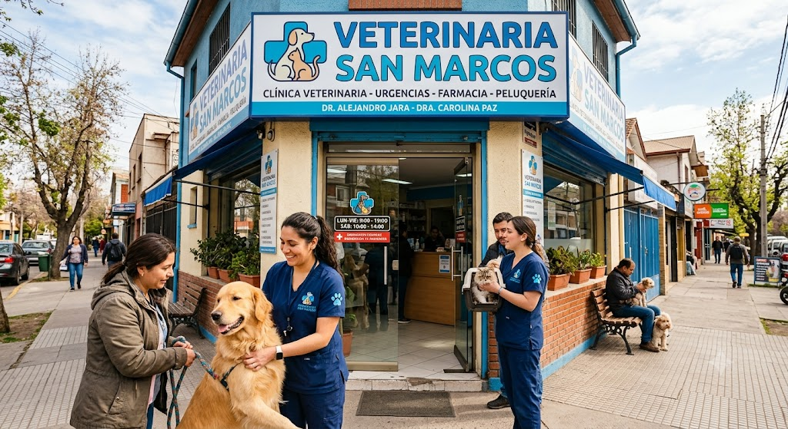
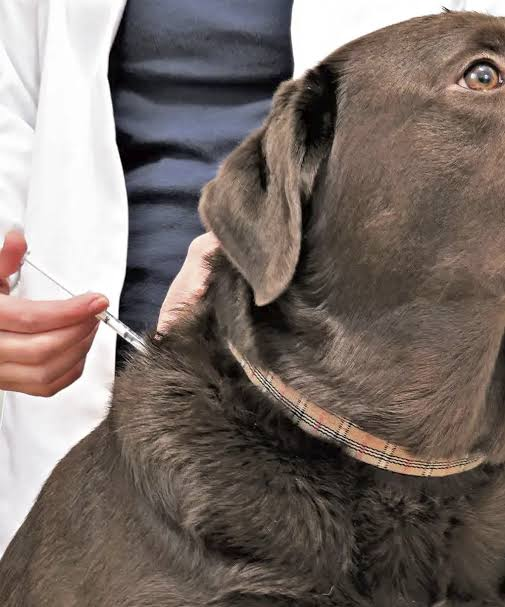
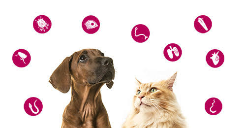

Veterinaria San Marcos
Clínica veterinaria en Rancagua, Región de O'Higgins, con más de 15 años de experiencia atendiendo perros, gatos, aves y conejos.
Ver servicios Solicitar hora
Servicios más solicitados
-

Consulta general
Perro / Gato · 30 min
$15.000
-

Vacuna antirrábica
Perro / Gato · 10 min
$12.000
-

Desparasitación interna
Perro / Gato · 5 min
Desde $8.000
-
Limpieza dental
Perro / Gato · 45 min
$55.000
¿Por qué elegirnos?
- Atendemos en promedio 25 pacientes al día
- 3 médicos veterinarios y 1 técnico veterinario
- Historial clínico y de vacunación siempre disponible
- Confirmación de cita antes de tu visita